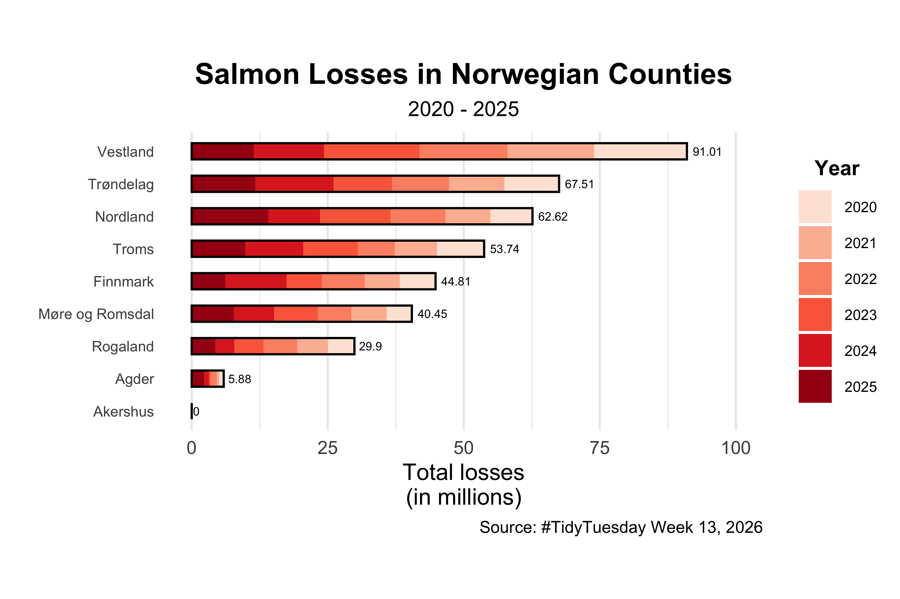
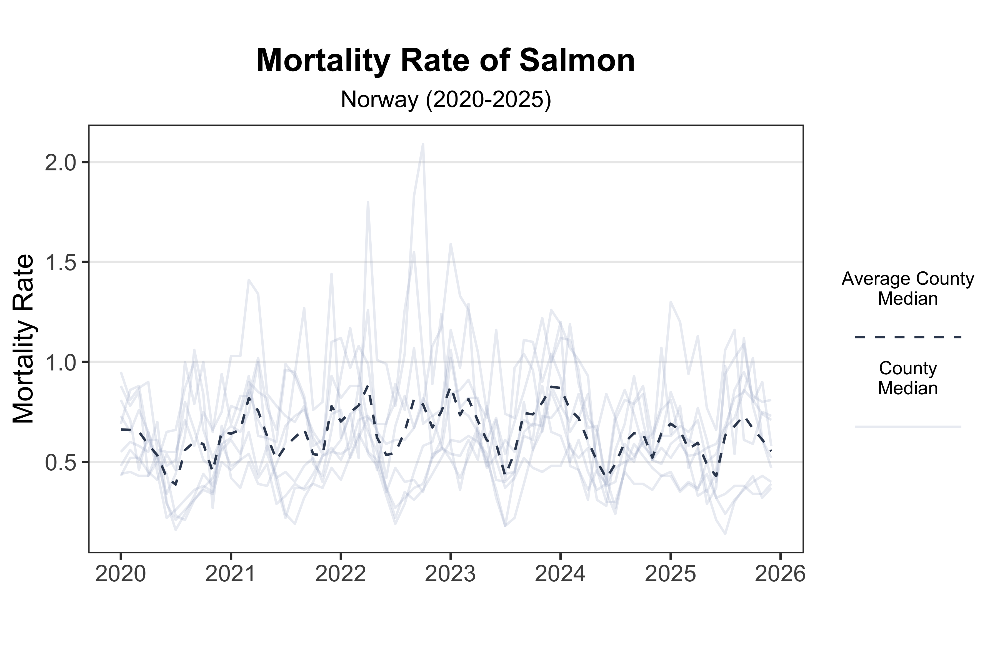

Code
# Packages
library(tidyverse)
# Load data
tuesdata <- tidytuesdayR::tt_load('2026-03-17')
# Extract data
monthly_losses_data <- tuesdata$monthly_losses_data
monthly_mortality_data <- tuesdata$monthly_mortality_dataThis week’s dataset explores farmed salmon mortality in Norway. The TidyTuesday GitHub repository provides this background:
The Fish Health Report is the Norwegian Veterinary Institute’s annual status report on the health and welfare situation for Norwegian farmed fish and is based on official statistics, data from the Norwegian Veterinary Institute and private laboratories. The report also contains results from a survey among fish health personnel and inspectors from the Norwegian Food Safety Authority, as well as assessments of the situation, trends and risks.
With monthly loss and mortality data across Norwegian counties, I wanted to explore three angles: identify which counties experienced the largest salmon losses, show how mortality rates varied over time, and create both a misleading visualization and its corrected version to demonstrate data visualization best practices.
# Packages
library(tidyverse)
# Load data
tuesdata <- tidytuesdayR::tt_load('2026-03-17')
# Extract data
monthly_losses_data <- tuesdata$monthly_losses_data
monthly_mortality_data <- tuesdata$monthly_mortality_dataTo identify which counties had the largest losses, I created a horizontal stacked bar chart. Using stacked bars by year provides both geographic comparison and transparency about year-to-year trends:
monthly_losses_data %>%
filter(geo_group == 'county' & species == 'salmon') %>%
group_by(region, year = factor(year(date))) %>%
summarise(losses = sum(losses)) %>%
ggplot(mapping = aes(y = reorder(region, losses, sum),
x = losses/1e6, fill = year)) +
geom_col(width = 1/2) +
geom_col(aes(x = total_losses/1e6, y = reorder(region, total_losses), fill = NULL),
data = monthly_losses_data %>%
filter(geo_group == 'county' & species == 'salmon') %>%
group_by(region) %>%
summarise(total_losses = sum(losses)),
fill = NA, color = 'black', width = 1/2) +
geom_text(aes(x = total_losses/1e6 + 3.1, y = reorder(region, total_losses), fill = NULL, label = round(total_losses/1e6, 2)),
size = 2,
data = monthly_losses_data %>%
filter(geo_group == 'county' & species == 'salmon') %>%
group_by(region) %>%
summarise(total_losses = sum(losses))) +
scale_fill_brewer(palette = 'Reds') +
labs(x = 'Total losses\n(in millions)', fill = 'Year', y = '',
title = 'Salmon Losses in Norwegian Counties',
subtitle = '2020 - 2025') +
scale_x_continuous(limits = c(0, 100)) +
theme_minimal() +
theme(aspect.ratio = 1/2, panel.grid.major.y = element_blank(),
legend.title = element_text(hjust = 0.5, size = 10, face = 'bold'),
legend.text = element_text(size = 7, hjust = 0),
plot.title = element_text(face = 'bold', hjust = 0.5, size = 14),
plot.subtitle = element_text(hjust = 0.5, size = 10),
axis.text.y = element_text(hjust = 1, size = 7))
Next, I’ll examine how salmon mortality rates changed across the top three counties (those with the highest total losses). The dataset includes median mortality rates plus first and third quartiles, which I can use to show variability:
monthly_mortality_data %>%
filter(geo_group == 'county' & species == 'salmon' & region %in% c('Vestland', 'Trøndelag', 'Nordland')) %>%
ggplot(mapping = aes(x = date, y = median)) +
geom_ribbon(aes(ymin = q1, ymax = q3), alpha = 0.2) +
geom_line() +
facet_wrap(~region, nrow = 1) +
labs(y = 'Mortality Rate', title = 'Mortality Rate of Salmon',
subtitle = "Median with interquartile range (Q1–Q3)",
x = '') +
theme_bw() +
theme(aspect.ratio = 0.6,
plot.title = element_text(hjust = 0.5, face = 'bold', size = 14),
plot.subtitle = element_text(hjust = 0.5, size = 10),
strip.text = element_text(size = 8),
panel.spacing = unit(1.5, "lines"),
panel.grid.minor = element_blank(),
panel.grid.major.x = element_blank(),
axis.text = element_text(size = 6),
axis.title = element_text(size = 8),
axis.text.x = element_text(hjust = 1, angle = 30))
For the final visualization, I want to explore the composition of salmon losses over time. But first, let me create an intentionally bad version to illustrate common data visualization mistakes. Decades of visualization research shows that pie charts struggle with numerical comparisons, and using polar coordinates for time series is equally problematic:
monthly_losses_data %>%
filter(geo_group == 'country' & species == 'salmon') %>%
pivot_longer(dead:other, values_to = 'count', names_to = 'type_of_loss') %>%
group_by(year = year(date), type_of_loss) %>%
summarise(count = sum(count)) %>%
mutate(year_lab = ifelse(type_of_loss == 'dead', year, NA),
year_pos = sum(count)+10500000) %>%
ggplot(mapping = aes(x = year, y = count, fill = type_of_loss)) +
geom_col(width = 1, color = 'black') +
geom_text(aes(label = year_lab, y = year_pos)) +
scale_fill_brewer(palette = 3) +
labs(title = 'How are salmon lost in Norge?',
fill = 'Type of loss') +
coord_polar() +
theme_void() +
theme(plot.title = element_text(size = 16, face = 'bold', hjust = 0.5),
aspect.ratio = 1,
legend.position = 'bottom')
This problematic visualization fails in several ways:
A better approach combines two key improvements: simplifying the legend by merging the small “escaped” and “other” categories, and switching to a line chart that uses a common y-axis scale for easy comparison:
my_cols <- c('dead'='#5e4c5f',
'discarded'='#ffbb6f',
'other'='#999999')
bg_df <- monthly_losses_data %>%
filter(geo_group == 'country' & species == 'salmon') %>%
mutate(other = other + escaped, .keep = 'unused') %>%
pivot_longer(dead:other, values_to = 'count', names_to = 'type_of_loss') %>%
group_by(year = year(date), type_of_loss) %>%
summarise(count = sum(count)/1e6)
bg_df %>%
ggplot(mapping = aes(x = year, y = count, color = type_of_loss)) +
geom_line() +
geom_point() +
scale_x_continuous(breaks = 2020:2025) +
scale_color_manual(values = my_cols) +
labs(x = 'Year', y = 'Count\n(in millions)', title = 'How are salmon lost in Norge?', color = 'Type of Loss') +
theme_bw() +
theme(plot.title = element_text(size = 16, face = 'bold', hjust = 0.5),
axis.text = element_text(size = 8),
axis.title = element_text(size = 10),
strip.text = element_text(size = 8),
panel.grid = element_blank(),
aspect.ratio = 1/2,
legend.position = 'bottom') 
This revised chart tells a much clearer story: dead salmon peaked in 2023 before declining through 2025, while discarded fish remained relatively stable. Notably, the “other” category spiked in 2024–2025. Although the data dictionary doesn’t specify what falls under “other,” this increase warrants further investigation.